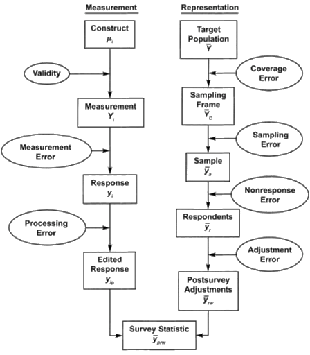
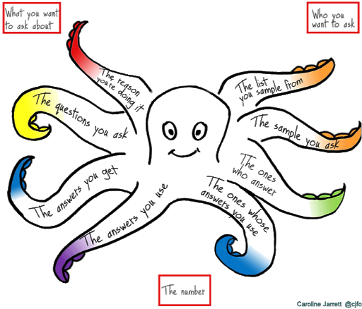
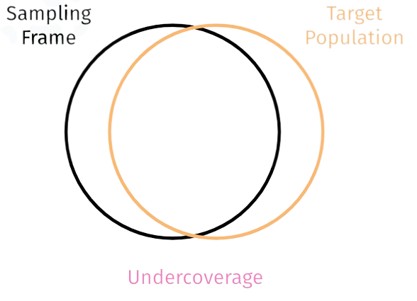
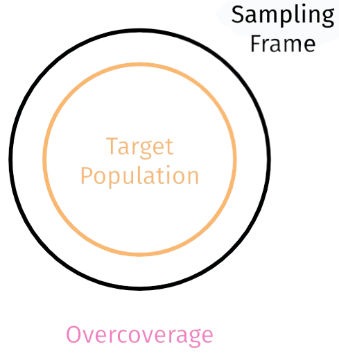
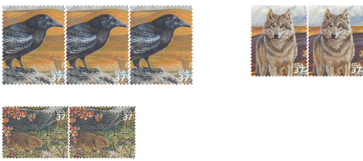
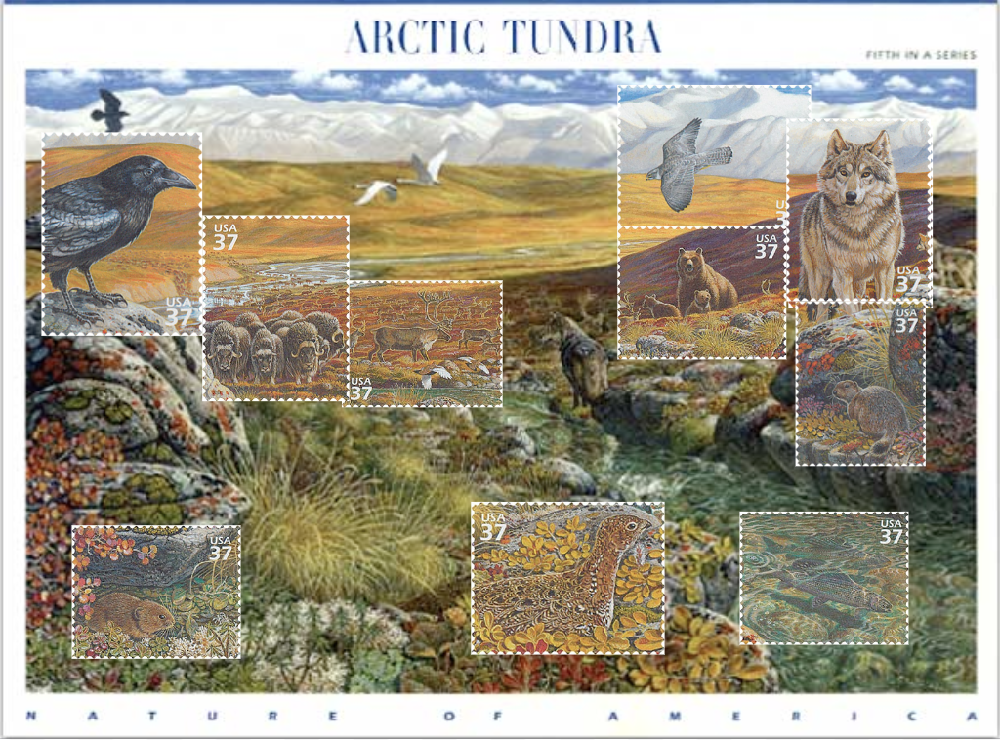
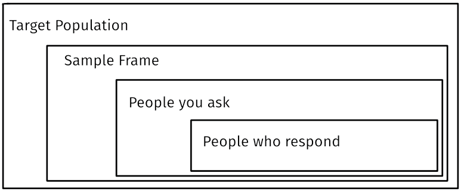
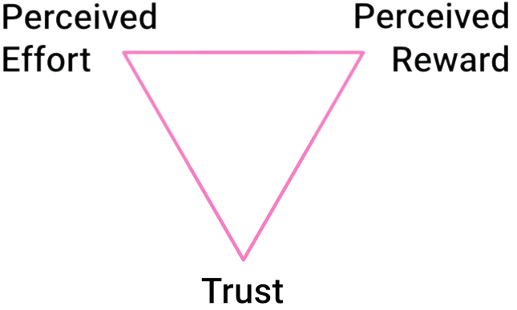
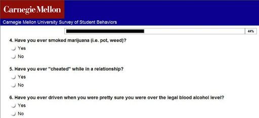
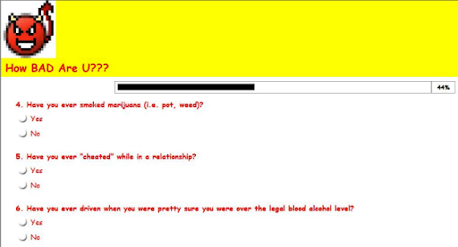

19 Survey Error
If you are reading this book, you are likely familiar with basic statistics, especially the standard error. And if you are an economist, you know how challenging it can be to handle biases and variables accurately.
We will explore the components of Total Survey Error (TSE) and methods to minimize them, enhancing the survey results’ quality. Additionally, we will delve into survey design, covering goal setting, sample selection, and comprehension of the survey process.
What is a survey? It may seem like a simple question, but it’s crucial to comprehend our subject matter. As per the formal definition from Groves et al. (2011).
The survey is a
systematic method
for gathering information from
(a sample of) entities
for the purpose of
constructing quantitative descriptors
of the attributes of the larger population
of which the entities are members.
A more human readable definition comes from Caroline Jarrett (2021).
The survey is a
process
for getting answers to questions from
(a sample of) people
for the purpose of
getting numbers
that you can use to make decisions.
19.1 Total Survey Error (TSE)
What makes a survey credible? The answer lies in its accuracy, effective design, and minimal error. Total Survey Error (TSE) is a framework enabling researchers to identify and mitigate the various errors that can surface in surveys. By understanding these errors, proactive measures can be taken to minimize them in subsequent surveys.
TSE consists of several components:
Total Survey Error = Specification error + Processing error + Sampling error + Coverage error + Non-response error + Measurement error
Specification error: Specification errors manifest when there’s no distinct link between theoretical concepts or constructs and the survey variables. It’s vital to ensure that the survey questions aptly capture the intended concepts. Uninsightful questions yield uninformative results, so thorough literature reviews are critical.
Processing error: These errors pertain to issues arising during the collection and management of survey data. Such errors could comprise data entry inaccuracies, coding mistakes, or other inconsistencies that may occur during data processing. Adherence to reproducible research practices is vital!
Sampling error: Sampling errors occur because surveys typically gather data from a subset of individuals rather than the entire population of interest. Such errors stem from the fact that the sample results may not flawlessly reflect the true population values.
Coverage error: Coverage errors happen when individuals from the target population are absent from the sampling frame used to draw a representative sample. This can lead to under-representation or over-representation of certain groups within the survey.
Non-response error: Non-response errors occur when individuals selected for the survey either choose not to participate or fail to provide comprehensive responses. This could introduce bias if non-respondents differ significantly from respondents in crucial aspects.
Measurement error: Measurement errors arise from discrepancies between the estimated value and the “true” value, often attributed to survey design elements. Such errors can involve inaccuracies in question phrasing, response options, or respondent interpretation.
19.2 Basic Theoretical Model of the Survey Process
Understanding the errors intrinsic to surveys, let’s delve into the respondent’s mental process while answering question — where potential pitfalls may lie. The survey process encompasses several steps that respondents undertake when addressing survey questions:
Retrieval of information: The respondent comprehends and forms an understanding of the concepts and terms presented in the question.
Comprehension of the question: The respondent retrieves pertinent information from memory to formulate an answer.
Judgment of appropriate answer: The respondent determines how to communicate the retrieved information and selects the most suitable answer.
Communication of answer: The respondent provides a response to the question.
Consider your thought process when answering the following question and identify any potential confusion:
Over the last five working days, what percentage of time did you use corporate-grade communication software?
Total Survey Error can be represented scientifically, showing when each error might occur.

We will delve into each of these stages and build an understanding of how to avoid common errors.
Caroline Jarrett (2021) provides one of my favorite depictions (a hit with marketers!).

19.2.1 Establishing goals
The utility of a survey is only as great as the insights it provides.
Name of the game is “Ask stupid questions – get stupid answers”.
Before you even start with designing your survey ask the three questions:
- What do you want to understand?
- Why do you need this understanding?
- What decisions will be guided by the answers?
Ensure to define the problem, conduct an exhaustive literature review, identify gaps in the discussion, and determine why it’s important to address these gaps. Then use theory to form hypotheses and decide on the testing methods.
19.2.2 Target Population and Sampling Frame
For a successful survey, we must outline our target population and sampling frame. The target population represents the group we aim to study, while the sampling frame is the source from which we draw our sample.
However, obtaining complete coverage can be challenging. Undercoverage happens when certain individuals or groups in the target population are inadequately represented in the sampling frame.

This can result in biased outcomes. Conversely, overcoverage refers to the inclusion of individuals or groups in the sampling frame who are not part of the target population, potentially leading to extraneous data collection and biases.

To ensure a representative sample, it’s crucial to minimize undercoverage and overcoverage. This can be achieved by meticulously designing the sampling frame, considering aspects such as demographics, location, marketing strategy, and time constraints. Frequent evaluation and adjustments of the sampling frame are key to addressing any coverage issues that might surface.
If you happen to miss your target population, you might find yourself taking a detour in the footsteps of Mr. Worldwide to Alaska. In the 2012 incident Pitbull participated in a commercial where Walmart clients could vote for the store where the artist would perform. Well, asking a question on the internet is akin to asking a question to everyone, and things took an unexpected turn. The vote was hijacked, and Pitbull ended up being sent to Alaska. So, it’s a reminder that when conducting surveys, it’s crucial to ensure you’re reaching the right people and avoiding any unintended outcomes.
19.2.3 Representativeness
Achieving representativeness in surveys is crucial for obtaining a balanced reflection of the population. This ensures that the selected sample accurately depicts the characteristics, opinions, or behaviors of the larger population.
Aiming for representativeness helps portray a comprehensive image reflecting the true diversity of the study population.
 
19.3 Iterative Design
Better to ask the right people than many people.
Iterative design is key in survey research, providing insights into the target population. It involves cycles of learning, refining, and scaling to enhance the effectiveness of surveys:
Interview 1 person.
Talk to 10 people.
Survey 100 people.
This iterative process enables researchers to glean insights from interactions, refine survey instruments, and scale up for extensive analysis, thereby enhancing understanding, ensuring reliable data, and informing decision-making.
19.4 The People You Ask and Those Who Respond
In fieldwork, we interact with participants and collect their responses. However, it’s crucial to address potential challenges in reaching the desired target group. Here are the key considerations:
Target Population: The specific group we aim to understand or represent through the survey.
Sample Frame: The list or source used to select our survey sample, ensuring it aligns with the target population.
People you ask: Individuals approached to participate in the survey, selected based on the sample frame and target population.
People who respond: The participants who voluntarily provide their responses. The response rate plays a role in ensuring data quality.
By carefully defining the target population, using an appropriate sample frame, effectively engaging participants, and analyzing respondent characteristics, we enhance the reliability and validity of our survey findings.

19.5 What Responses Depend On
Survey participant responses are influenced by key factors, including effort, reward, and trust. Recognizing these dependencies can enhance the quality and reliability of survey data.
The diagram below, adapted from Jarrett and Gaffney (2009)’s work on web form design, illustrates the interplay between these factors:

Effort: The amount of effort required from participants to complete the survey can significantly impact their willingness to respond. Long, complex, or time-consuming surveys may discourage participation, leading to lower response rates.
Reward: Participants often seek some form of incentive or benefit for their involvement in the survey. This can include tangible rewards, such as monetary compensation or gift cards, or intangible rewards, such as the satisfaction of contributing to research or personal interest in the survey topic. Offering appropriate rewards can motivate participants to provide accurate and thoughtful responses.
Trust: Building trust with survey participants is crucial for encouraging open and honest responses. Participants need to feel confident that their privacy and confidentiality are respected, their data will be handled securely, and the survey is conducted by a reputable organization. Clear communication about data protection measures and ethical considerations helps establish trust and increases the likelihood of obtaining reliable responses.
By taking into account the effort required, providing appropriate rewards, and building trust in the survey process, researchers can foster an environment conducive to obtaining high-quality responses from participants.
19.6 How BAD Are U???
In an intriguing study titled John, Acquisti, and Loewenstein (2011), experiments were conducted to understand the factors that influence people’s willingness to divulge personal information. One notable experiment involved altering the design of a survey page and observing its impact on disclosure rates.
Students from Carnegie Mellon University were recruited for the study, and variations were made to the survey’s title and interface. In the frivolous condition, the survey bore a humorous title, “How BAD are U??”, and a playful appearance to downplay privacy concerns. Conversely, the baseline condition had the survey presented within a professional context, titled “Carnegie Mellon University Survey of Ethical Standards.”
Interestingly, participants in the frivolous condition were, on average, 1.7 times more likely to confess to engaging in sensitive behaviors compared to those in the baseline condition. For example, individuals in the frivolous condition were over twice as likely to admit to taking nude photos of themselves or a partner, with a 31.8% admission rate in the frivolous condition versus a 15.7% rate in the baseline condition.
These findings suggest that individuals might feel more at ease sharing personal information on platforms that don’t appear strictly professional, even though these platforms could potentially pose a higher risk of data misuse. The results highlight the complex interplay between context, trust, and disclosure when it comes to personal information.
This study brings to light the intricate nature of human behavior and the various factors that influence our readiness to reveal personal information in different settings. Understanding these dynamics is pivotal in designing surveys and online platforms that achieve the right balance between user trust and data protection.
 
19.7 Answering a Question
According to Tourangeau, Rips, and Rasinski (2000), there are four key steps involved in effectively answering a survey question. These steps provide valuable insights into the respondent’s process and are critical to designing effective surveys:
Understand the question: The first step in answering a survey question involves comprehension. Respondents need to accurately understand the question in order to provide a meaningful response. Therefore, the clarity and readability of the question are of utmost importance. For example:
Understand: In the last five days at work, what percentage of time did you use corporate-grade communication software?
Find an answer: Once the question is understood, respondents must search their memory or knowledge to identify a suitable answer. This answer should be based on the information available to them. For instance:
Remember:
- What color of shirt did you wear Tuesday 2 weeks ago?
- What color of shirt did you wear for New Years?
- How did you celebrate your 18th birthday?
- What did you have for breakfast yesterday?
- When did the American Civil War start?
Judge the answer: After identifying a potential answer, respondents evaluate whether they feel comfortable sharing it. Factors such as privacy, social desirability, and the sensitivity of the information play a role in this judgment process. For example:
Agree or Disagree with the following statement: “I approve of the current management’s actions.”
- Strongly agree
- Agree
- Neither
- Disagree
- Strongly disagree
Though the question seems straightforward, expressing disagreement with the current management’s actions could have potential consequences, such as risk of dismissal if the management becomes aware of your lack of support.
Place the answer: Finally, respondents need to appropriately map their answer onto the response options provided. This could involve selecting a specific category, rating on a scale, or providing a written response. For example:
What is your major?
What is your career?
What is your major? ____
What is your career? ____
19.7.1 Enhancing Question Quality
The process of refining survey questions can drastically improve the quality of responses received. For instance, the original question:
“In the last five days at work what percentage of time did you use corporate grade communication software?”
can be revised into multiple more specific questions, enhancing clarity and ensuring accurate responses. An example of these revised questions are:
How would you improve the question?
“On your most recent working day, what percentage of time did you use messaging software other than email (Slack, Discord, WhatsApp, Telegram, etc.)?”
“What do you use for communication at work? (Select all that apply)”
- Slack
- Discord
- Other
Insights from survey response psychology can aid researchers in designing high-quality questionnaires that minimize respondent burden, enhance data quality, and create a better overall survey experience.